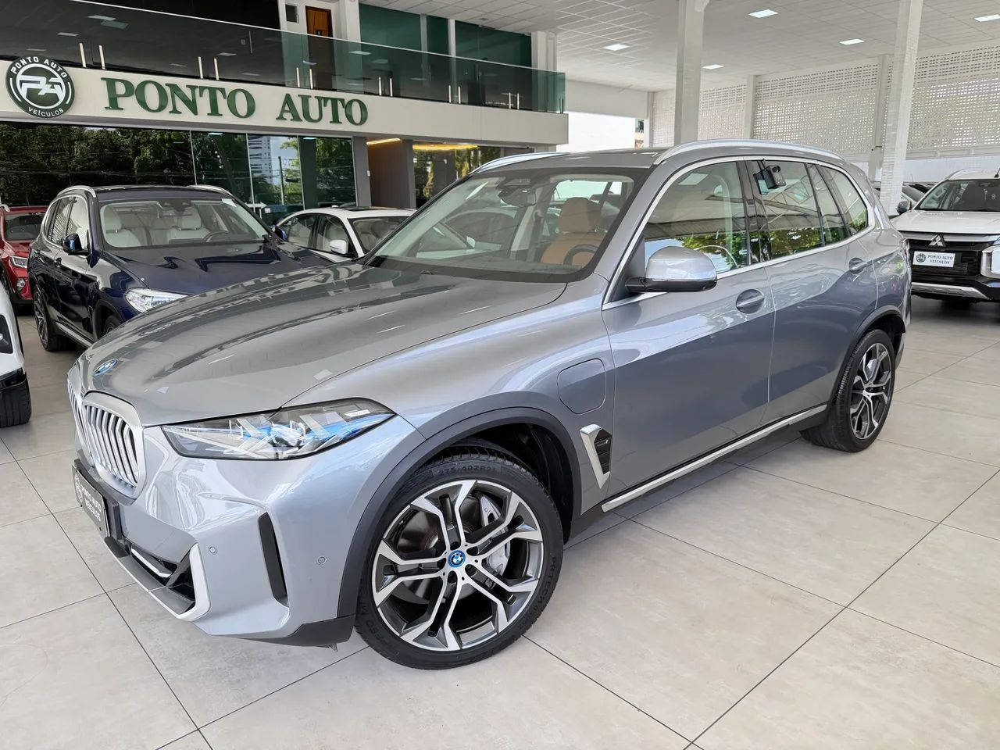
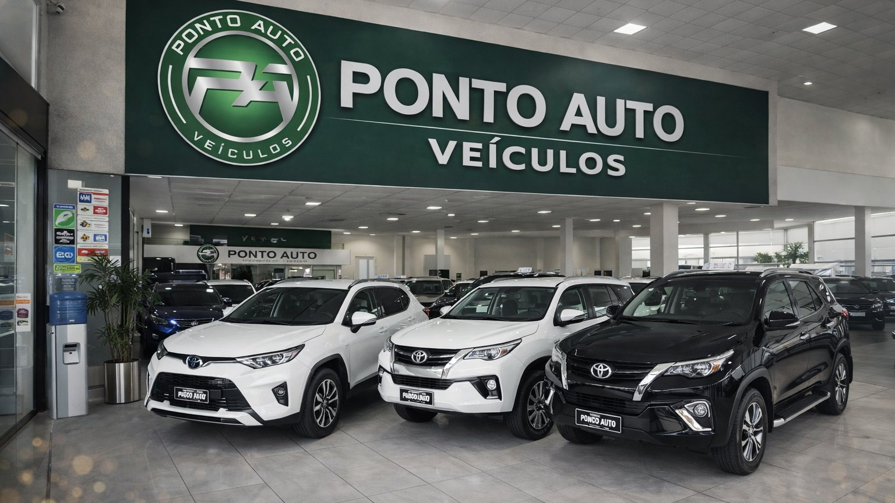

JOÃO PESSOA · PARAÍBA
Seu próximo
carro.
No ponto certo.
Grandes escolhas começam com confiança.
Encontre o veículo que acompanha a sua próxima fase.
ESCOLHA A SUA PRÓXIMA CONQUISTA
Encontre o seu próximo.
SUVs, picapes e novas possibilidades.
O próximo capítulo começa aqui.
Carregando veículos…
Nenhum veículo por aqui.
Experimente outra marca ou faixa de preço.
Não conseguimos carregar o estoque.
Você pode tentar novamente ou falar diretamente com a loja.
Consultar pelo WhatsApp
MUITOS NOVOS CAMINHOS.
MUITO ALÉM DA CHAVE
O carro é seu.
O compromisso
é nosso.
Há 25 anos, a Ponto Auto faz parte das escolhas de quem dirige em João Pessoa. Aqui, cada conversa começa pelo que importa: o que você procura.
Seu usado faz parte da conversa
Converse com nossa equipe sobre a avaliação do seu veículo na troca.
Você perto de cada detalhe
Peça fotos, tire suas dúvidas e agende uma visita para conhecer o carro pessoalmente.
AS PORTAS ESTÃO ABERTAS
Seu próximo destino:
Ponto Auto.
Rua Professor Oswaldo de Miranda Pereira, 1164
Brisamar · João Pessoa, PB
- Segunda a sexta
- 8h às 18h
- Sábado
- 8h às 12h30
- Domingo
- Fechado
Em feriados, confirme o horário com a equipe.
A PRÓXIMA ESCOLHA É SUA